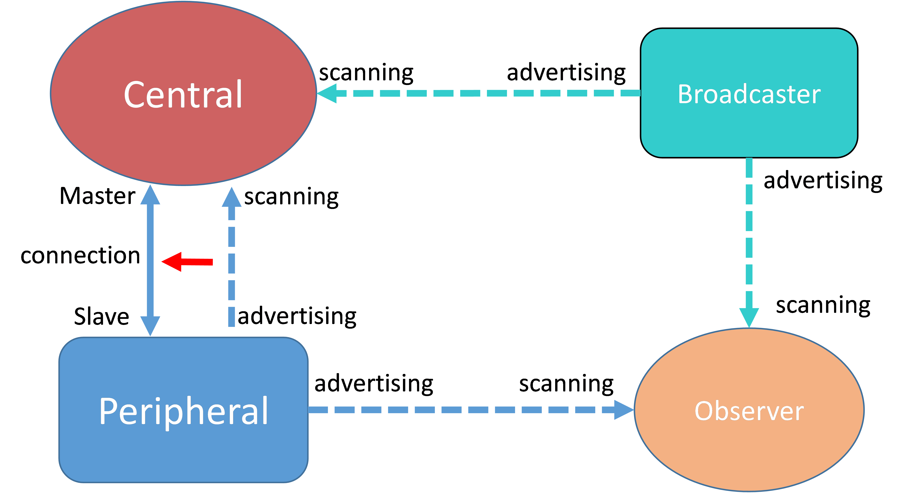

The GAP layer manages connections, security, and bonded devices.
The GAP layer APIs are built on top of the Host-Controller Interface (HCI), the Security
Manager Protocol (SMP), and the Device Database.
GAP defines four possible roles that a BLE device may have in a BLE system
(see Table 1):
- Central
- Scans for advertisers (Peripherals and Broadcasters)
- Initiates connection to Peripherals; Master at Link Layer (LL) level
- Usually acts as a GATT Client, but can also contain a GATT Database
itself
- Peripheral
- Advertises and accepts connection requests from Centrals; LL Slave
- Usually contains a GATT Database and acts as a GATT Server, but may also be
a Client
- Observer
- Scans for advertisers, but does not initiate connections; Transmit is
optional
- Broadcaster
- Advertises, but does not accept connection requests from Centrals; Receive
is optional
Figure 1. GAP Topology
